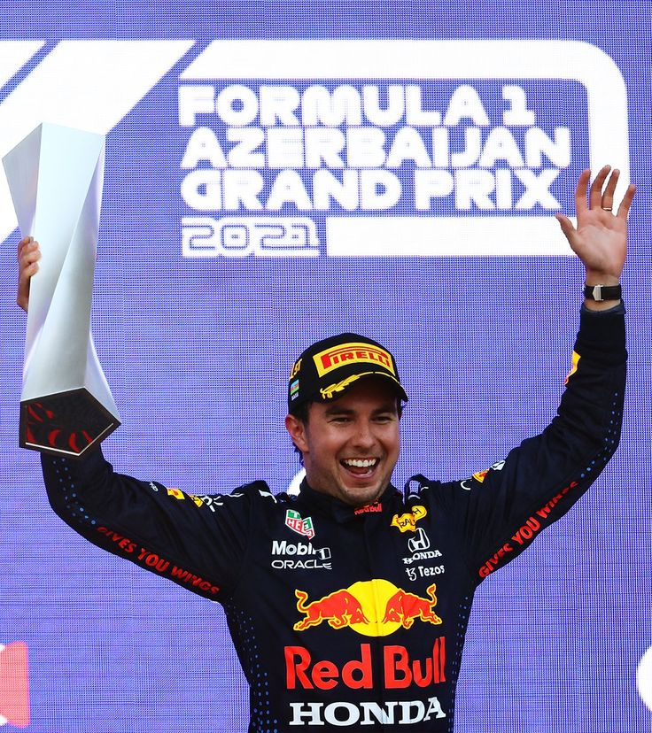
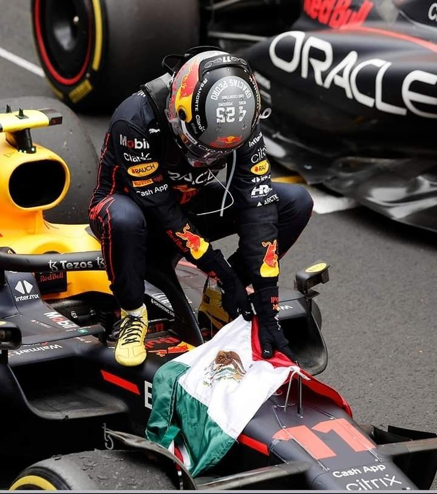

2020
Gran Premio de Sakhir
La primera victoria de checo y el gran cambio a su carrera.
Ver video →

2021
Gran Premio de Azerbaiyán
La mejor actuación en conducción, Él es Checo Pérez!
Ver video →

2022
Gran Premio de Mónaco
Sergio Pérez el Rey de Las Calles conquista Mónaco.
Ver video →